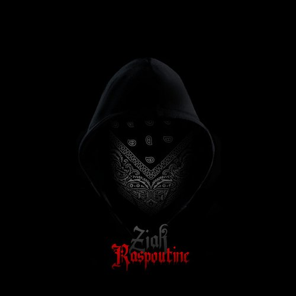

Biographie Ziak :
Nom de scène : Ziak
Nom réel : Inconnu
Profession : Rappeur
Pays : France
Ziak est un rappeur mais plus précisément un "Drilleur" qui est caractérisé La drill est caractérisée par des paroles au contenu audiovisuel perturbant, choquant, ou même irréprochable avec un rythme irrégulier (808, hi-hat, etc...)
Popularisée localement à Chicago, les rappeurs de drill attirent l'attention médiatique par leurs paroles violentes, et la scène est par la suite associée aux crimes perpétrés à Chicago.
Originaire d’Evry, dans l’Essone (91). Ziak commence à avoir ses premiers succès après seulement quelques mois en activité avec des sons comme
S.P.S
ou
Fixette . Bien que son identité reste inconnue cela permet d'entretinir le mystère autour du personnage. En 2021 une polémique a surgit autour de l'artiste qui est accusé de s'inventer une "street credibility" qui signifie que le rappeur s'invente une vie pour flamber.
En 2021 l'artiste dévoile son premier album intitulé "Akimbo" sur ses différents réseaux sociaux :
Twitter ,
Instagram ,
Youtube .
L'album a eu un franc succès et a même été disque d'or en à peine une semaine.
A la suite de cela l'artiste a annoncé une tournée pour 2022 afin de pouvoir rencontrer ses fans.